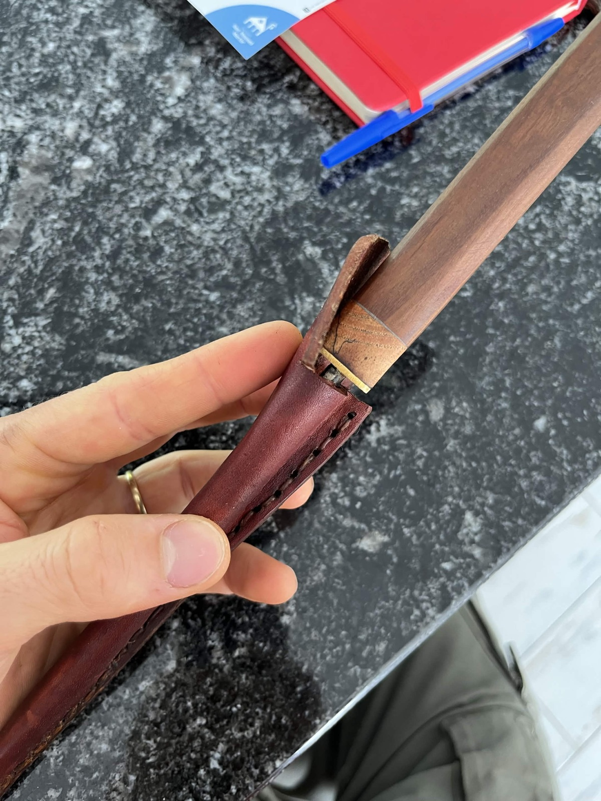
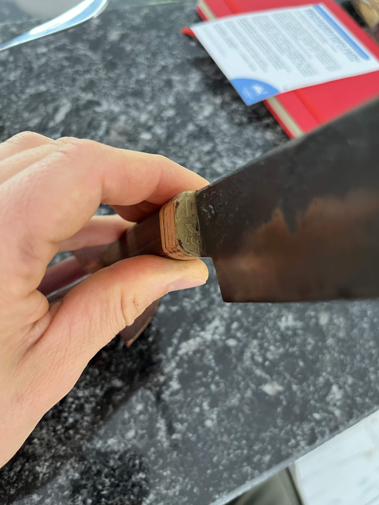

Cuchillo Artesanal - Vista Completa
Este cuchillo fue forjado a mano utilizando técnicas tradicionales de herrería. Cada pieza es única y está hecha con materiales de primera calidad.





Catálogo de Cuchillos
Cómo se hacen nuestros cuchillos
Forja
El proceso comienza con la selección del acero de alta calidad. Se calienta a temperaturas extremas en la forja y se golpea con martillos hasta darle la forma deseada. Cada golpe es preciso y requiere años de experiencia.
Temple
Una vez forjado, el cuchillo se calienta nuevamente y se sumerge en aceite o agua para endurecer el acero. Este proceso es crucial para garantizar que el cuchillo mantenga el filo durante mucho tiempo.
Mango y Vaina
El mango se tallado en madera de primera calidad, seleccionada por su durabilidad y estética. La vaina se confecciona a mano con cuero curtido, cosido con hilo resistente para garantizar su durabilidad.
Acabado
Finalmente, se pule y afila el cuchillo, se añaden los detalles decorativos y se inspecciona cada pieza para asegurar la máxima calidad.
Contacto
¿Te interesa alguno de nuestros cuchillos? ¿Querés hacer un pedido personalizado? Escribinos y te responderemos a la brevedad.